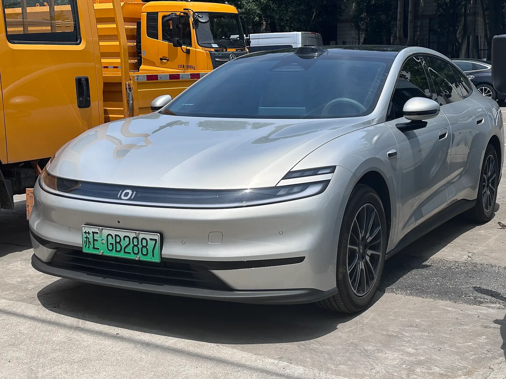
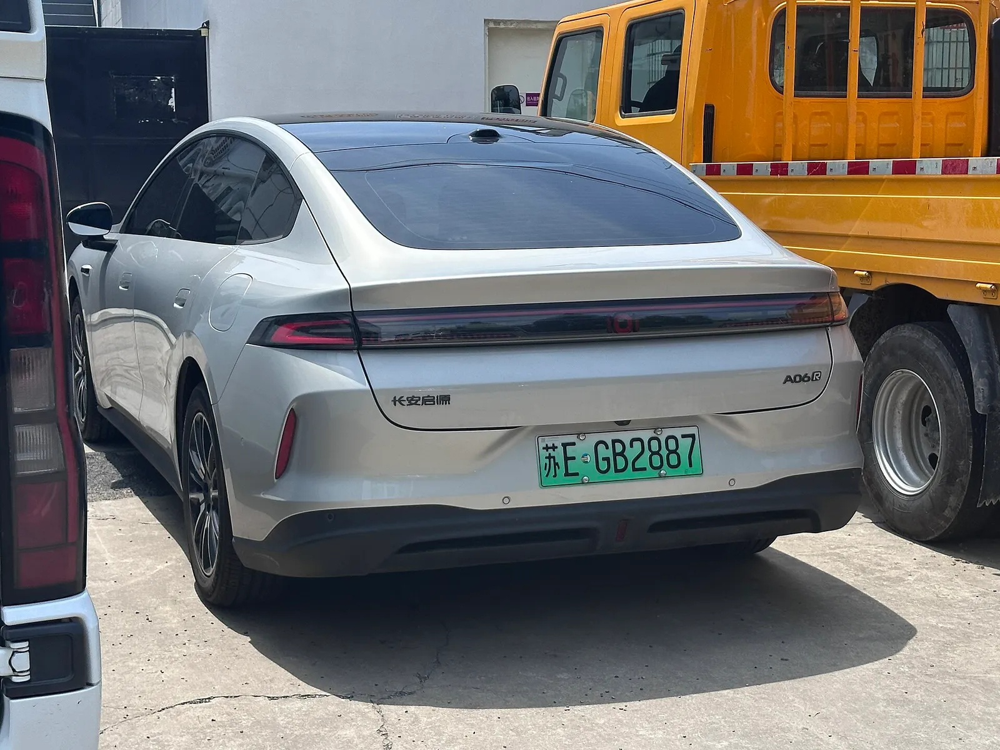
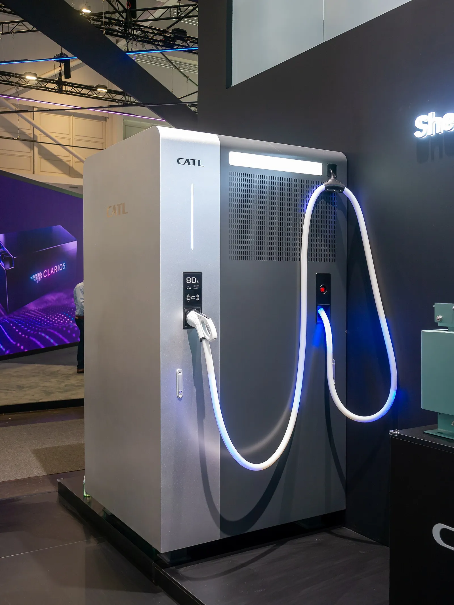
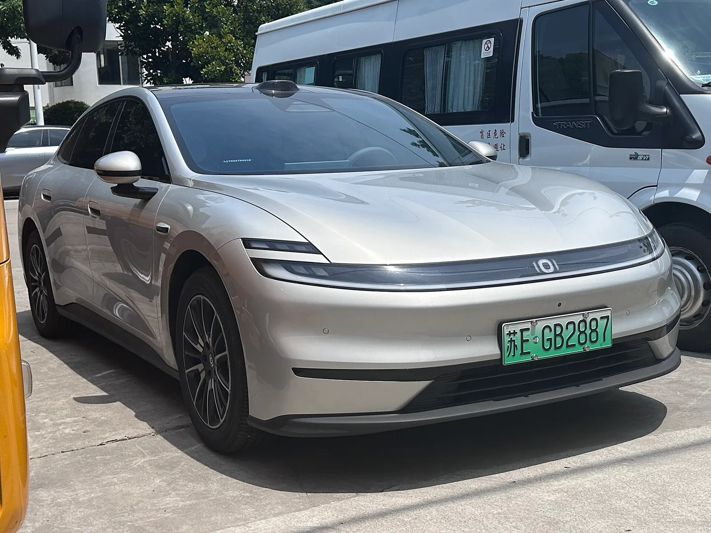

▲ 세계 최초로 나트륨이온 배터리를 탑재한 양산형 전기 세단, 창안 네보(치위안) A06 ⓒ Wikimedia Commons
배터리에 소금을 넣는다는 이야기, 농담이 아니었다.
세계 최대 배터리 제조사 CATL과 중국 완성차 업체 창안(Changan)이 2026년 2월, 세계 최초로 나트륨이온 배터리를 탑재한 양산형 승용 전기차를 공개했다. 차명은 창안 네보(Nevo) A06 — 중국 내수명은 치위안(Qiyuan) A06이다. 리튬이온 배터리가 지배해온 전기차 시장에 처음으로 '소금 배터리'가 실제 양산차에 얹힌 순간이다.
코발트도 니켈도, 심지어 리튬조차 쓰지 않는 이 배터리는 무엇이 다르고, 왜 지금 등장했을까. 확인 가능한 CATL·창안 발표와 외신 보도를 토대로 정리했다.
1. 무슨 일이 있었나
CATL과 창안은 2026년 2월 5일, 나트륨이온 배터리를 탑재한 세계 최초의 양산형 승용 전기차를 공개했다. 대상 차량은 창안의 준중형 세단 라인업인 '네보(Nevo) A06'(중국 내수 사양명 치위안 A06)이다. 겉모습은 기존 가솔린·PHEV 버전 A06과 크게 다르지 않지만, 바닥에 얹힌 배터리 화학이 완전히 다르다.
탑재된 배터리는 CATL이 '낙스트라(Naxtra)'라는 브랜드로 선보인 나트륨이온 배터리다. IAA 모빌리티 등 업계 매체들은 이를 두고 "세계 최초로 나트륨이온 배터리를 얹은 양산 승용차"라고 평가했다. 연내 셀 양산이 본격화될 것으로 예상되며, 실제 판매는 2026년 중반부터로 알려졌다.

▲ CATL의 나트륨이온 배터리 '낙스트라'를 처음 탑재한 창안 네보(치위안) A06 ⓒ Wikimedia Commons
2. 나트륨이온 배터리란 무엇인가
나트륨이온 배터리는 리튬 대신 나트륨(소듐, Na) 이온이 양극과 음극을 오가며 전기를 저장하는 방식이다. 리튬이온 배터리와 작동 원리 자체는 비슷하지만, 핵심 원자재가 다르다.
📍 왜 나트륨인가
나트륨은 지구 지각에 풍부하게 존재하는 원소로, 바닷물에서도 쉽게 얻을 수 있다. 매장량이 편중돼 가격 변동성이 큰 리튬·코발트·니켈과 달리 원자재 수급 리스크가 작다는 점이 나트륨이온 배터리의 가장 큰 매력으로 꼽혀왔다. 다만 그동안은 에너지 밀도가 낮아 양산차에 넣기 어렵다는 한계가 있었다.
CATL의 낙스트라 배터리는 셀 에너지 밀도 175Wh/kg를 달성했다. 회사 측은 이를 "나트륨이온 화학 기준 양산 최고 수준"이라고 밝혔다. 여전히 최상위 리튬이온 배터리(NCM 계열 250~300Wh/kg 안팎)보다는 낮지만, 준중형급 세단에 400km 이상의 주행거리를 확보할 수 있는 수준까지 올라왔다는 의미다.
| 구분 | 나트륨이온(CATL 낙스트라) | 리튬이온(LFP 계열) |
|---|---|---|
| 핵심 원자재 | 나트륨(소듐) — 지각 내 풍부 | 리튬 — 매장지 편중, 가격 변동 큼 |
| 에너지 밀도 | 175Wh/kg(CATL 발표 기준) | 통상 160~200Wh/kg대 |
| 저온 성능 | -40℃에서 용량 90%+ 유지 | 저온에서 출력·용량 저하 뚜렷 |
| -30℃ 방전 출력 | LFP 대비 약 3배 | 기준값 |
| 코발트·니켈 사용 | 미사용 | 미사용(LFP 기준) |
| 양산 현황 | 2026년 창안 네보 A06 최초 탑재 | 이미 다수 차종에 광범위 적용 |
3. 혹한에서 진가를 발휘하는 배터리
나트륨이온 배터리가 특히 주목받는 지점은 저온 성능이다. CATL에 따르면 낙스트라 배터리는 -40℃부터 70℃까지 작동 가능한 범위를 갖췄고, 영하 40℃의 혹한에서도 사용 가능 용량의 90% 이상을 유지한다. 영하 30℃ 환경의 방전 출력은 비교 대상인 LFP 배터리 대비 약 3배에 달한다고 회사 측은 설명했다.
겨울철 전기차의 고질적 약점으로 꼽혀온 저온 주행거리·충전 저하 문제를 정면으로 겨냥한 특성이다. 실제로 리튬이온 배터리를 얹은 기존 전기차들은 혹한기에 주행가능거리가 절반 가까이 줄어드는 경우도 보고돼 왔다.

▲ IAA 모빌리티에 전시된 CATL의 충전 인프라 기술. CATL은 배터리 셀뿐 아니라 충전 솔루션까지 사업 영역을 넓히고 있다 ⓒ Wikimedia Commons
4. 10년, 1조 9,000억 원이 들어간 프로젝트
낙스트라 배터리는 하루아침에 나온 결과물이 아니다. 외신 보도에 따르면 CATL은 나트륨이온 배터리 연구개발에 약 10년, 투자 규모로는 약 100억 위안(약 1조 9,000억 원, 미화 약 14억 달러)을 쏟아부은 것으로 전해진다. CATL의 나트륨이온 연구 프로그램은 2016년부터 시작된 것으로 알려졌으며, 박사급 연구원 20여 명을 포함해 300명 이상의 전담 연구 인력이 투입된 것으로 전해진다.
✅ CATL이 나트륨이온에 베팅한 이유
· 업계 전반이 전고체 배터리를 "다음 세대 배터리"로 홍보하는 동안, CATL은 이미 상용화 단계에 근접한 나트륨이온을 병행 개발
· 리튬 가격 급등락에서 자유로운 원자재 안정성 확보
· 저가형·보급형 전기차 시장에서 LFP 배터리를 대체할 차세대 옵션으로 포지셔닝
· 코발트·니켈 채굴 관련 환경·인권 이슈에서 비교적 자유로운 원자재 구성
CATL은 세계 최대 배터리 제조사로 테슬라·BMW·폭스바겐 등 주요 완성차 업체에 배터리를 공급해왔다. 이번 나트륨이온 배터리 양산은 리튬이온 일변도였던 전기차 배터리 시장에 새로운 축을 추가하는 시도로 읽힌다. CATL의 기술 관련 소식은 공식 발표 자료에서 확인할 수 있다. IAA 모빌리티 발표 원문 바로가기

▲ 창안 네보 A06. 외관은 기존 가솔린·PHEV 버전과 크게 다르지 않지만 바닥에 얹힌 배터리 화학이 다르다 ⓒ Wikimedia Commons
5. 앞으로는 어떻게 되나
업계의 관심은 이제 "확산 속도"로 옮겨가고 있다. 창안 네보 A06은 나트륨이온 배터리의 첫 상용 사례일 뿐, CATL은 낙스트라 배터리를 다른 완성차 업체에도 공급할 계획인 것으로 알려졌다. 다만 현재로서는 준중형급 이하 보급형 차종에 우선 적용될 가능성이 높다는 관측이 많다. 에너지 밀도가 최상위 리튬이온 배터리에는 아직 못 미치는 만큼, 장거리·고성능이 필요한 플래그십 차종보다는 가격 경쟁력과 혹한 대응력이 중요한 보급형·상용 시장에서 먼저 자리를 잡을 것이라는 전망이다.
✅ 국내 소비자가 지켜볼 지점
· 나트륨이온 배터리 탑재 차량의 국내 출시 여부는 아직 불투명
· CATL은 국내 완성차·배터리 업체와도 다양한 협력 관계를 맺고 있어, 중장기적으로 국내 시장 영향 가능성 존재
· 리튬이온과 나트륨이온이 서로 대체가 아닌 병행 발전하는 흐름이 될 가능성이 높음
6. 요약
CATL과 창안이 2026년 2월, 세계 최초로 나트륨이온 배터리를 탑재한 양산형 승용 전기차 '네보 A06'을 공개했다. CATL의 낙스트라 배터리는 45kWh 용량으로 400km 이상의 주행거리를 확보했고, 에너지 밀도 175Wh/kg는 나트륨이온 화학 기준 양산 최고 수준이다.
가장 큰 강점은 혹한 성능이다. -40℃에서도 용량 90% 이상을 유지하고, -30℃ 방전 출력은 LFP 배터리 대비 약 3배에 달한다. 코발트·니켈은 물론 리튬도 쓰지 않아 원자재 리스크에서 자유롭다는 점도 부각된다.
10년, 약 1조 9,000억 원이 투입된 이 프로젝트는 리튬이온 일변도였던 배터리 시장에 새로운 선택지를 던졌다. 당장은 보급형 차급 중심으로 확산될 가능성이 높지만, CATL의 시장 지배력을 감안하면 파급력은 작지 않을 전망이다.